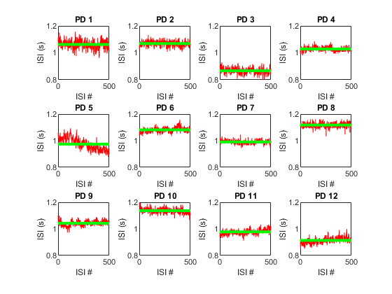

load('Supplementary Data S1.mat');
dataSetAssignment = Data.StrideTimeIntervals_15minTrial.PD;
for counter = 01:12
a = dataSetAssignment(:,counter);
figure(1), pause(.8)
subplot (3,4,counter),plot((a),'color', 'r')
title (sprintf("PD %d",counter))
xlabel ('ISI #')
ylabel ('ISI (s)')
axis ([0,500,0.8,1.2])
fprintf("\nPD %02d done\n", counter)
hold on
pause(.5)
fprintf("Drawing %02d's mean\n",counter)
fplot(mean(a),'LineWidth', 3, 'color','g');
end
saveas(gcf, '15minTrial', 'jpg');
PD 01 done
Drawing 01's mean
PD 02 done
Drawing 02's mean
PD 03 done
Drawing 03's mean
PD 04 done
Drawing 04's mean
PD 05 done
Drawing 05's mean
PD 06 done
Drawing 06's mean
PD 07 done
Drawing 07's mean
PD 08 done
Drawing 08's mean
PD 09 done
Drawing 09's mean
PD 10 done
Drawing 10's mean
PD 11 done
Drawing 11's mean
PD 12 done
Drawing 12's mean
